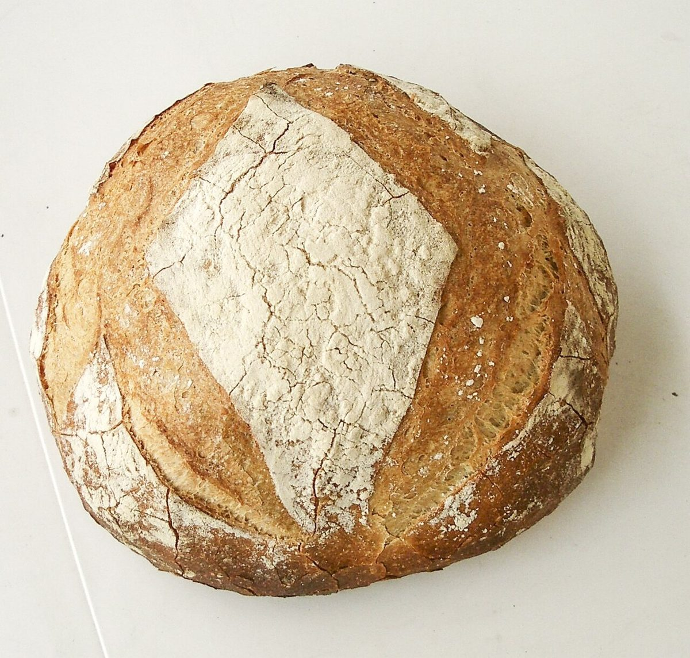
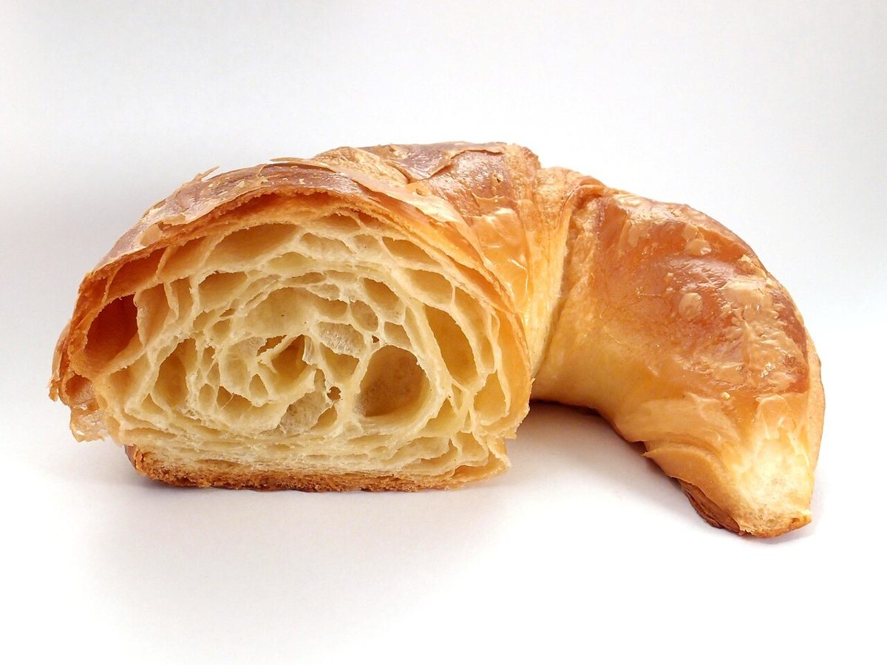

制作側の連想
maniez の縦の棒は、ぜんぶで7本
屋号の「maniez」を小文字の活字で書くと、縦にまっすぐ立つ棒(ステム)の数が文字ごとに違います。m は3本、a は1本、n は2本、i は1本(上の点は数えません)、e と z は0本です。制作側はここから「棒の本数を数える」ことを連想しました。このサイトでは、棒の本数と同じ数だけ写真を置いています。制作側の連想で、お店の理念・由来とは無関係です。
棒の本数だけ
6つの文字に、7枚の写真(イメージ)
写真は国外・撮影地不明のフリー素材で、お店のものではありません。e と z の列は0本なので、写真も置いていません。
3本



1本

2本


1本

0本
縦の棒は0本。
置く写真もありません。
0本
縦の棒は0本。
置く写真もありません。
ご案内
お店のこと(確認できたものだけ)
| 所在地 | 〒839-1213 福岡県久留米市田主丸町益生田864-7 |
|---|---|
| 電話 | 0943-73-7372 |
| 営業時間 | 準備中 |
| 定休日 | 準備中 |
| ご予約 | 準備中 |
| 駐車場 | 準備中 |
| SNS | Instagram @__maniez__ |